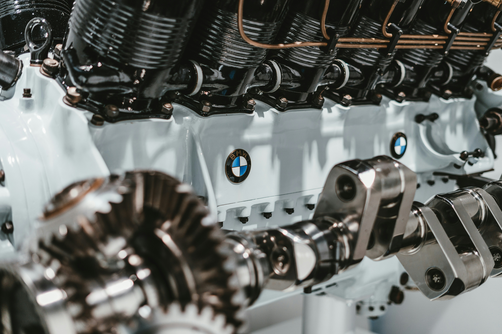
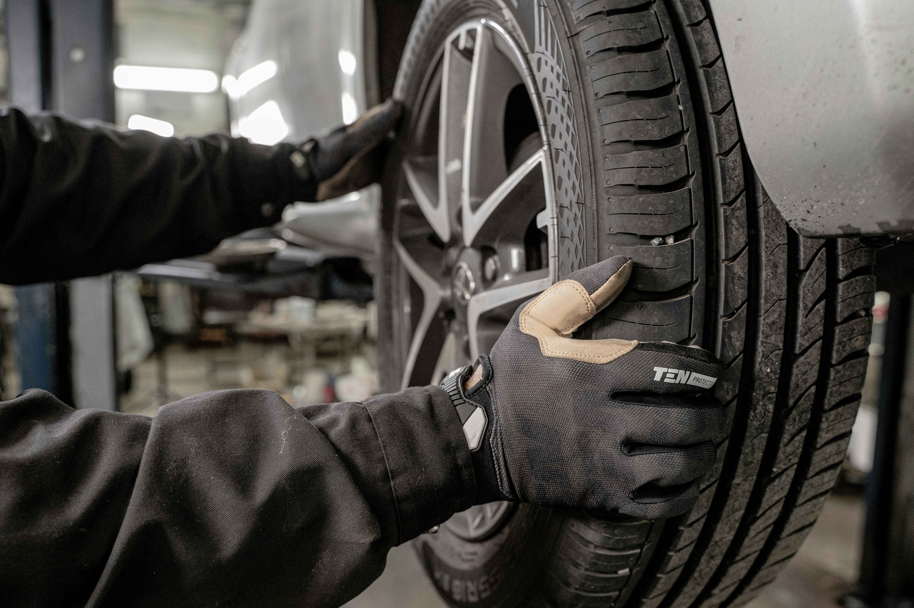

★★★★★
Kole explained the cooling issue clearly, prioritized what mattered, and got the car feeling dependable again.
BMW service customerFullerton, California
M5X Mechanix is built for drivers who want thoughtful diagnostics, clear recommendations, and work that is done with care. BMW is our specialty, but every car gets the same focused attention.
What We Do
Oil leaks, cooling systems, brakes, suspension, fluids, and the maintenance details that keep the car reliable.
Warning lights, drivability issues, electrical concerns, leaks, and noises checked with root-cause thinking.
Enthusiast upgrades, supporting maintenance, and parts installed with attention to fit, use case, and reliability.
A practical condition report before you buy, with clear notes on what matters now and what may come later.
Interior refreshes, exterior wash support, and cleanup recommendations before delivery, sale, or inspection.
BMW is the specialty, but M5X evaluates and services a wide range of vehicles with the same careful approach.

Built around the diagnosis
From a strange drivability issue to a routine maintenance visit, we start by listening, checking the car, and explaining the next step before the work moves forward.
In the shop
Maintenance, diagnostics, inspections, and upgrades handled with the same careful standard.

Mechanical work
Road-ready detailsShop Hours
Stop by during shop hours or send a service request before you arrive. For larger repairs and diagnostics, scheduling ahead helps us give your car the time it deserves.
Clear communication, realistic priorities, and repairs that make sense.
Kole explained the cooling issue clearly, prioritized what mattered, and got the car feeling dependable again.
BMW service customerThe inspection notes were practical and honest. I knew exactly what I was buying before I committed.
Pre-purchase inspectionThe shop feels enthusiast-led without the pressure. Clear diagnostics, clean work, and realistic advice.
Diagnostics customerKole explained the cooling issue clearly, prioritized what mattered, and got the car feeling dependable again.
BMW service customerThe inspection notes were practical and honest. I knew exactly what I was buying before I committed.
Pre-purchase inspectionThe shop feels enthusiast-led without the pressure. Clear diagnostics, clean work, and realistic advice.
Diagnostics customerYes. Pre-purchase inspections focus on condition, common failure points, repair priorities, and whether the vehicle makes sense for the buyer.
Send the year, make, model, and what needs attention. We will follow up with next steps.